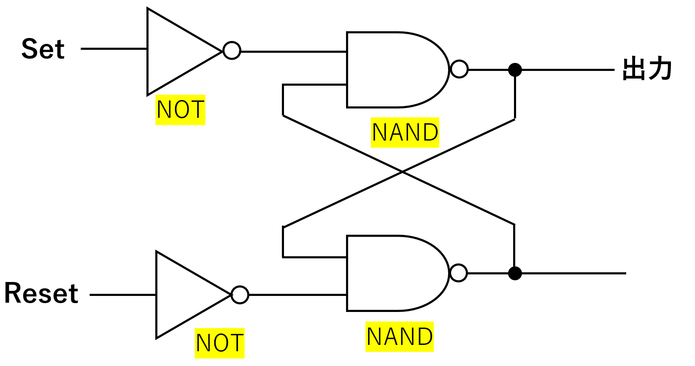
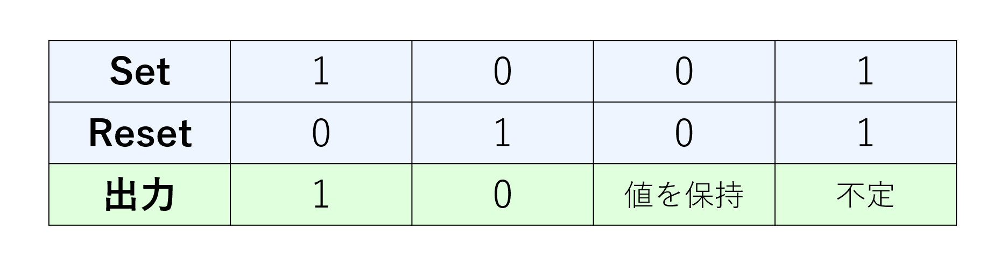

【AP対策】フリップフロップ回路と全加算器
はじめに
フリップフロップ回路は1ビットの情報を記憶できる論理回路です。 正確には一度入力したら、次の入力があるまで同じ値を出力し続ける回路です。 フリップフロップ回路の代表的なものにRSフリップフロップ回路があります。 このRSというのはResetとSetのことで、Resetから入力すると0が、Setから入力すると 1が回路に記憶されます。
フリップフロップ回路の仕組み

上の図はRSフリップフロップ回路の一例になります。他にもNORを使うパターンや
NOTを使わないパターンなど色々あります。上の図でSetに1、Resetに0を入力したときの、
1の通り道を赤色で示した図はこちらです。
この図を見ると導線がクロスしている部分でループが発生していることが分かると思います。
この状態であれば、Setの入力を0にしても出力の値は1のまま保持されることになります。
このことからフリップフロップ回路には1ビットの情報を保存する性質があるということになります。
では次にResetの入力を1にした時の状態を見てみましょう。
Resetを1にするとさっきとは真逆の状態になります。出力値は0になり、Resetを0にしても
その状態が保持されます。
ちなみにSetとResetの両方に1を入力すると回路が壊れます。
具体的には何が出力されるか分からなくなります。なのでフリップフロップ回路を使用する場合は
SetとResetが両方とも1にならないように設計する必要があります。
フリップフロップ回路は1ビットの情報を記憶できるという性質上、SRAMやフラッシュメモリに使われます。
コンデンサを使用しているDRAMはリフレッシュ動作が必要なのに対してフリップフロップ回路を
使用しているSRAMは一度記憶してしまえば半永久的に保持することができるのが特徴です。
最後に
最後におまけとして、今回紹介したフリップフロップ回路の真理値表を載せておきます。
